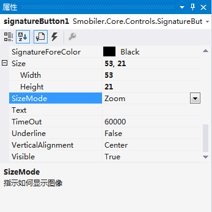

原文连接:https://www.cnblogs.com/amanda112/p/10760828.html
SignatureButton控件
一、 样式一
我们要实现上图中的效果，需要如下的操作：
- 从工具栏上的“Smobiler Components”拖动一个SignatureButton控件到窗体界面上
- 修改SignatureButton的属性
- AutoVisibleInGridView属性
设置一个值，该值指示在GobileView中，当Visible指定的属性值为空时，当前单元格是否显示控件，并调整GridView中单元格的大小。默认属性设置为“False”，如图1；
图 1
- BackColor属性
设置控件的背景色，将该属性设置为“192, 255, 192”，如图2；
图 2
- BackColorAlpha属性
设置控件背景色透明度，将该属性设置为“0”，即全透明，如图3；
图 3
- Border属性
设置控件边框，默认设置为“0,0,0,0”，如图4；
图 4
- BorderColor属性
设置控件边框颜色，默认设置为“Black”，如图5；
图 5
- BorderRadius属性
设置控件边框的角度，默认设置为“0”，即控件边框的角度呈直角，如图6；
图 6
- BorderSize属性
设置控件边框大小，默认设置为“0.1”，如图7；
图 7
- Enabled属性
设置控件是否可以对用户交互作出响应，将该属性设置为“True”，则控件则可以与用户进行交互，如图8；

图 8
- ForeSize属性
设置控件字体大小，默认设置为“4”，则该控件的字体大小为4，如图9；
图 9
- ForeColor属性
设置控件字体的颜色，默认设置为“Black”，即控件字体的颜色为黑色，如图10；
图 10
- Format属性
设置文本格式，默认设置为空。可以通过该属性设置文本的颜色、大小等。
- GenerateMember属性
设置控件是否生成成员变量，将该属性设置为“True”，则该控件能被其他方法引用，如图11；
图 11
- HorizontalAlignment属性
设置控件文本水平方向，默认设置为“Center”，如图12；
图 12
- HoverBackColor属性
设置按钮选中时的背景颜色，默认设置为“Gray”，如图13；
图 13
- HoverForeColor属性
设置按钮选中时的字体颜色，默认设置为“Black”，如图14；
图 14
- Location属性
让控件显示在合适的位置（22, 86），如图15；
图 15
- Modifiers属性
设置控件的可见性级别，默认设置为“Private”，其他的窗体则访问不到该控件，如图16；
图 16
- Name属性
设置控件名称为“signatureButton1”，如图17；
图 17
- Padding属性
设置控件边框内容间隔，默认设置为“0,0,0,0”，即控件没有边框内容间隔，如图18；
图 18
- PictureQuality属性
设置图像质量，将该属性设置为“10”，如图19；
图 19
- ResourceID属性
设置按钮图标名称，将该属性设置为“Sc1”，如图20；
图 20
- SignatureBackColor属性
设置控件签字界面的背景色，默认设置为“White”，如图21；
图 21
若将该属性设置为“Red”，显示界面如图22。
图 22
- SignatureForeColor属性
设置控件签字界面的文本颜色，默认设置为“Black”，如图23；
图 23
- Size属性
让控件大小为（53, 21），如图24；
图 24
- SizeMode属性
设置如何显示图片，默认设置为“Zoom”，即极速显示图片，如图25；

图 25
若SizeMode属性设置为“StretchImage”时，图片可以按图片框的大小比例缩放显示。
- TimeOut属性
设置客户端获取条码的超时时间（毫秒），默认设置为“60000”，如图26；
图 26
- Underline属性
设置文本下划线，默认设置为“False”，如图27；
图 27
- VerticalAlignment属性
设置控件文本水平方向，默认设置为“Center”，如图28；
图 28
- Visible属性
设置控件是否显示，将Visible属性设置为“True”，如图29；
图 29
- SignatureCompleted事件
VB：
Private Sub VoiceRecorderButton1_RecordedAudio_1(sender As Object, e As BinaryData) Handles VoiceRecorderButton1.RecordedAudio
If System.String.IsNullOrEmpty(e.ResourceID) = False Then
e.SaveFile()
Me.PlayVoice(e.ResourceID)
End If
End Sub
- Smobiler窗体设计界面显示效果
二、 手机效果显示